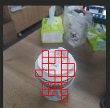
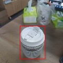

FOMO 轻量检测模型
FOMO(Faster Objects, More Objects) 是由 Edgeimpulse 工程师提出的一种轻量级的目标检测模型，其主要特点是模型非常小，计算量也很小，表现出来就是速度非常快，精度也不错。
FOMO 的优点是速度快，缺点是精度不高，但是在一些对精度要求不高的场景下，FOMO 是一个不错的选择。
目标
输入图片，检测目标的位置和大小，并识别出物体的类别，能同时检测多个物体。
原理
原文： FOMO: Object detection for constrained devices
和 YOLO v2 类似，目的都是检测到物体，但是 YOLO v2 的后处理还是比较复杂，有大量的框需要处理，想在没有硬件加速的单片机上运行还是很吃力的。
FOMO 采用更简单的思路来做检测：
- 使用一个经典网络作为特征提取器，比如 MobileNet v1， 然后从网络中间截断，得到一个特征图，这个特征图的大小是 n x n x c, n 是特征图的宽高，c 是特征图的通道数。
这里 n 的取值取决于从网络哪里截断，比如我们输入分辨率是 128 x 128, 想要一个 8 x 8 的特征图输出，相当于把图片分辨率降低了 16 倍，从网络找到该层截断得到 8 x 8 的特征图。
- 这个 n x n x c， c 代表了有 c 个分类，每一层用来找一个分类的物体的位置，每层有 n x n 个像素，每个像素代表了在该位置是否有该分类的物体（的置信度）
- 遍历这个 n x n x c 的特征图，找到置信度超过设置的阈值的像素坐标，我们就认为这些地方有物体存在，然后按照缩放比例映射到原图，比如只有一个分类即 c 为 1 时，我们要检测一个杯子，得到如下的结果：

- 在得到了一大堆看起来有效的坐标点后，我们认为这些地方有物体存在，但是有一大堆点，我们可以简单地将挨着的点合并成一个框，这样就得到了一个大框

- 因为这个框有时候可能不是很准，Edgeimpulse 官方的做法是值采用这个框的中心点，这样这个点在物体上的概率比较大，在 MaixHub 的实现中，直接给出了框让你可以选择直接使用框，或者如果想只使用中心点，可以自己修改一下代码即可。
实际上，上面的处理都已经在代码库中封装好了，实际使用时，只需要训练模型，结合代码即可运行。
试试训练一个模型
在 MaixHub 创建一个检测训练项目，然后采集数据并标注（可以在线标注），创建一个训练任务，参数选择 TinyMaix 平台，选择 fomo , 主干网络根据实际情况选择，比如mobilenetv1_0.25_8这样的名字代表使用了mobilenetv1网络， alpha 为 0.25, 这个数值越小网络越小，准确率越低，最后面的 8 则代表了输出分辨率是输入分辨率的 1/8 ，比如 输入 128x128，输出就是 16x16，输出的分辨率越大越适合检测小一点的物体，根据你的单片机性能和被检测的物体大小来选择。
然后进行训练即可，训练完成后得到模型，按照 代码 中的使用说明，将模型文件放到代码中，然后编译运行即可，可以现在 Linux 下测试，再搬运到单片机上运行。